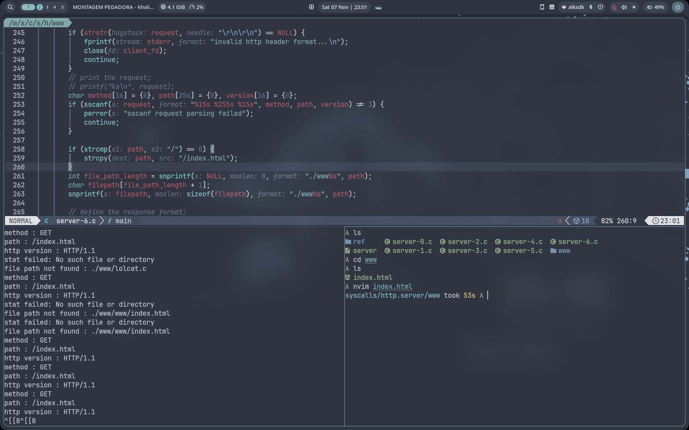

01The life of one request
HTTP is a conversation over a reliable byte pipe (TCP). Before any HTTP text is sent, the browser must find the server's address and open that pipe. Press Play or click the steps.

02Anatomy of a request and a response
HTTP/1.1 is plain text. Hover over any coloured part to learn what it is. Each line ends with the two bytes
\r\n (CRLF), and a blank line marks the end of the headers.
GET /shop?item=42 HTTP/1.1 Host: example.com User-Agent: curl/8.5 Cookie: sid=9f3ac1 (body goes here for POST)
HTTP/1.1 200 OK Content-Type: text/html Content-Length: 27 Server: nginx/1.24.0 Set-Cookie: sid=9f3ac1; HttpOnly <h1>Welcome to the shop</h1>
03Inside the server: the socket loop
A real server (nginx, Apache, Node, Flask) boils down to this C skeleton. Each line is a system call into the kernel. Step through it.
04Playground: talk to a tiny server
This page contains a mini HTTP server written in JavaScript. Edit the raw request, press Send, and watch the server parse it, route it and build a response. Try the attack presets too.
- waiting for a request...
05Status code explorer
The first digit tells you whose problem it is. Click a code.
06Attack surface map
Every stage of the lifecycle is a place where something can go wrong. Click a card to flip its defence.